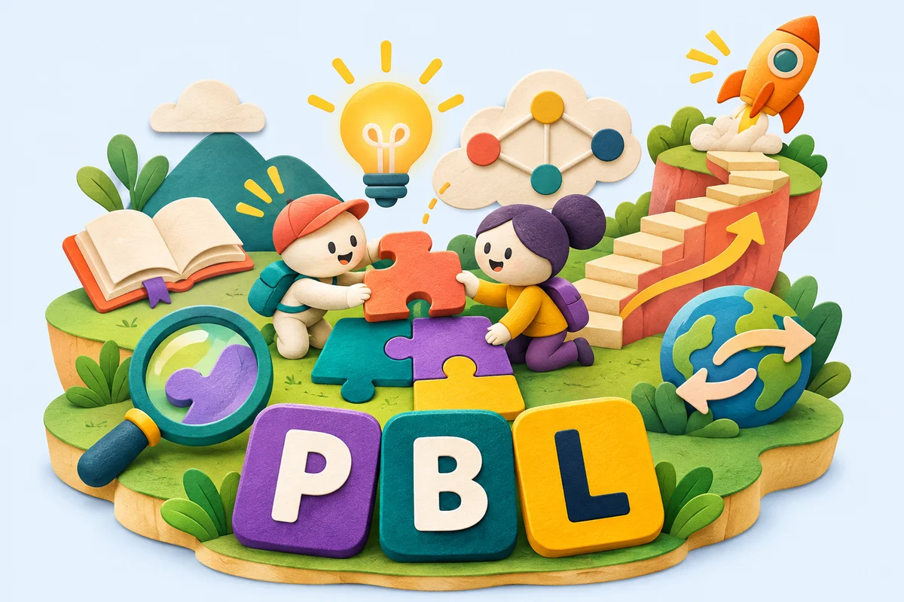

✦ A little wordplay. A lot of thinking.
Big ideas.
One word
at a time.
Crack the words behind powerful learning. Six guesses, a few clues, and plenty of “aha!” moments.
32 ideas from the Pedagogy Showcase. Play solo or think together as a class.
A quick mix of 5 words. No timer. Room to think.

Think it. Connect it. Play it.
✦Build your knowledgeRecall the big ideas.
⌘Make connectionsUse clues and evidence.
↗Take it furtherTry an idea in your classroom.
Let’s think this through.
Guess the word
✓Right spot↔Move it×Not here
✦Look at all those connections!
words solved
points earned
Revisit the ideas you explored
One last question: which idea will you try in your next lesson?